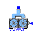
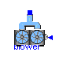
 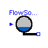
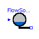


 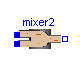
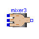
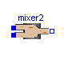
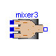

 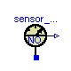
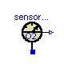
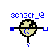
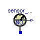
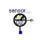
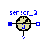


This library contains components to build models of biological municipal wastewater treatment plants based on the Activated Sludge Model No.1 (ASM1) by the International Association on Water Quality (IAWQ) [1,2]. The library currently is structured in following sub-libraries:
Interfaces |
- partial ASM1 models and connectors
|
PreClar |
- primary clarifier models
|
SecClar |
- several secondary settling tank models
|
Examples |
- wastewater treatment plant models
|
Main Author: Gerald Reichl Technische Universitaet Ilmenau Faculty of Informatics and Automation Department Dynamics and Simulation of ecological Systems P.O. Box 10 05 65 98684 Ilmenau Germany email: gerald.reichl@tu-ilmenau.de References: [1] M. Henze and C.P.L. Grady Jr and W. Gujer and G.v.R. Marais and T. Matsuo: Activated Sludge Model No.1. IAWQ, 1987.
[2] M. Henze and W.Gujer and T. Mino and. M.v. Loosdrecht: Activated Sludge Models ASM1, ASM2, ASM2d, and ASM3. IWA Task Group on Mathematical Modelling for Design and Operation of Biological Wastewater Treatment, 2000. Copyright (C) 2000 - 2002, Gerald Reichl
The Modelica package is free software; it can be redistributed and/or modified under the terms of the Modelica license, see the license conditions and the accompanying disclaimer in the documentation of package Modelica in file "Modelica/package.mo".
WasteWater.ASM1.deni

This component models the ASM1 processes and reactions taking place in an unaerated (denitrification) tank of a wastewater treatment plant. The InPort signal gives the tank temperature to the model.
All stoichiometric and kinetic parameters of the activated sludge model No.1 (ASM1).
| Name | Default | Description |
|---|---|---|
| Y_h | 0.67 | Heterotrophic Yield [g Xbh COD formed/(g COD utilised)] |
| Y_a | 0.24 | Autotrophic Yield [g Xba COD formed/(g N utilised)] |
| f_p | 0.08 | Fraction of biomass to particulate products [-] |
| i_xb | 0.086 | Fraction nitrogen in biomass [g N/(g COD)] |
| i_xp | 0.06 | Fraction nitrogen in particulate products [g N/(g COD)] |
| mu_h_T | 4.0 | Maximum heterotrophic growth rate at T=15 deg C [day^-1] |
| b_h_T | 0.28 | Heterotrophic decay rate at T=15 deg C [day^-1] |
| mu_a_T | 0.5 | Maximum autotrophic growth rate at T=15 deg C[day^-1] |
| b_a_T | 0.1 | Autotrophic decay rate at T=15 deg C [day^-1] |
| k_a_T | 0.06 | Ammonification rate at T=15 deg C [m3/(g COD day)] |
| k_h_T | 1.75 | Maximum specific hydrolysis rate at T=15 deg C [g Xs/(g Xbh COD day)] |
| K_x_T | 0.0175 | Half-saturation (hydrolysis) at T=15 deg C [g Xs/(g Xbh COD)] |
| K_nh | 1.0 | Half-saturation (auto. growth) [g NH-N/m3] |
| K_s | 20.0 | Half-saturation (hetero. growth) [g COD/m3] |
| K_oh | 0.2 | Half-saturation (hetero. oxygen) [g O/m3] |
| K_no | 0.5 | Half-saturation (nitrate) [g NO-N/m3] |
| K_oa | 0.4 | Half-saturation (auto. oxygen) [g O/m3] |
| ny_g | 0.8 | Anoxic growth rate correction factor [-] |
| ny_h | 0.4 | Anoxic hydrolysis rate correction factor [-] |
| V | 1000 | Volume of denitrification tank [m3] |
model deni "ASM1 denitrification tank"
//denitrification tank based on the ASM1 model
extends WasteWater.Icons.deni;
extends Interfaces.ASM1base;
// tank specific parameters
parameter Modelica.SIunits.Volume V=1000 "Volume of denitrification tank";
// following 4 connectors are already in ASM1base and are inherited,
// but listed hear again to avoid an icon related problem
// with the sequence of extends-clauses
Interfaces.WWFlowAsm1in In;
Interfaces.WWFlowAsm1out Out;
Interfaces.WWFlowAsm1out MeasurePort;
Modelica.Blocks.Interfaces.InPort T(final n=1);
equation
aeration = 0;
// no aeration in this tank //
// volume dependent dilution term of each concentration
inputSi = (In.Si - Si)*In.Q/V;
inputSs = (In.Ss - Ss)*In.Q/V;
inputXi = (In.Xi - Xi)*In.Q/V;
inputXs = (In.Xs - Xs)*In.Q/V;
inputXbh = (In.Xbh - Xbh)*In.Q/V;
inputXba = (In.Xba - Xba)*In.Q/V;
inputXp = (In.Xp - Xp)*In.Q/V;
inputSo = (In.So - So)*In.Q/V;
inputSno = (In.Sno - Sno)*In.Q/V;
inputSnh = (In.Snh - Snh)*In.Q/V;
inputSnd = (In.Snd - Snd)*In.Q/V;
inputXnd = (In.Xnd - Xnd)*In.Q/V;
inputSalk = (In.Salk - Salk)*In.Q/V;
end deni;
WasteWater.ASM1.nitri

This component models the ASM1 processes and reactions taking place in an aerated (nitrification) tank of a wastewater treatment plant. The InPort signal gives the tank temperature to the model.
All soichiometric and kinetic parameters of the activated sludge model No.1 (ASM1).
| Name | Default | Description |
|---|---|---|
| Y_h | 0.67 | Heterotrophic Yield [g Xbh COD formed/(g COD utilised)] |
| Y_a | 0.24 | Autotrophic Yield [g Xba COD formed/(g N utilised)] |
| f_p | 0.08 | Fraction of biomass to particulate products [-] |
| i_xb | 0.086 | Fraction nitrogen in biomass [g N/(g COD)] |
| i_xp | 0.06 | Fraction nitrogen in particulate products [g N/(g COD)] |
| mu_h_T | 4.0 | Maximum heterotrophic growth rate at T=15 deg C [day^-1] |
| b_h_T | 0.28 | Heterotrophic decay rate at T=15 deg C [day^-1] |
| mu_a_T | 0.5 | Maximum autotrophic growth rate at T=15 deg C[day^-1] |
| b_a_T | 0.1 | Autotrophic decay rate at T=15 deg C [day^-1] |
| k_a_T | 0.06 | Ammonification rate at T=15 deg C [m3/(g COD day)] |
| k_h_T | 1.75 | Maximum specific hydrolysis rate at T=15 deg C [g Xs/(g Xbh COD day)] |
| K_x_T | 0.0175 | Half-saturation (hydrolysis) at T=15 deg C [g Xs/(g Xbh COD)] |
| K_nh | 1.0 | Half-saturation (auto. growth) [g NH-N/m3] |
| K_s | 20.0 | Half-saturation (hetero. growth) [g COD/m3] |
| K_oh | 0.2 | Half-saturation (hetero. oxygen) [g O/m3] |
| K_no | 0.5 | Half-saturation (nitrate) [g NO-N/m3] |
| K_oa | 0.4 | Half-saturation (auto. oxygen) [g O/m3] |
| ny_g | 0.8 | Anoxic growth rate correction factor [-] |
| ny_h | 0.4 | Anoxic hydrolysis rate correction factor [-] |
| V | 1000 | Volume of nitrification tank [m3] |
| alpha | 0.7 | Oxygen transfer factor |
| de | 4.5 | depth of aeration [m] |
| R_air | 23.5 | specific oxygen feed factor [gO2/(m^3*m)] |
model nitri "ASM1 nitrification tank"
// nitrification (aerated) tank, based on the ASM1 model
extends WasteWater.Icons.nitri;
extends Interfaces.ASM1base;
// tank specific parameters
parameter Modelica.SIunits.Volume V=1000 "Volume of nitrification tank";
// aeration system dependent parameters
parameter Real alpha=0.7 "Oxygen transfer factor";
parameter Modelica.SIunits.Length de=4.5 "depth of aeration";
parameter Real R_air=23.5 "specific oxygen feed factor [gO2/(m^3*m)]";
WWU.MassConcentration So_sat "Dissolved oxygen saturation";
// following 4 connectors are already in ASM1base and are inherited,
// but listed hear again to avoid an icon related problem
// with the sequence of extends-clauses
Interfaces.WWFlowAsm1in In;
Interfaces.WWFlowAsm1out Out;
Interfaces.WWFlowAsm1out MeasurePort;
Modelica.Blocks.Interfaces.InPort T(final n=1);
Interfaces.AirFlow AirIn;
equation
// Temperature dependent oxygen saturation by Simba
So_sat = 13.89 + (-0.3825 + (0.007311 - 0.00006588*T.signal[1])*T.signal[1])*
T.signal[1];
// extends the Oxygen differential equation by an aeration term
// aeration [mgO2/l]; AirIn.Q_air needs to be in
// Simulationtimeunit [m3*day^-1]
aeration = (alpha*(So_sat - So)/So_sat*AirIn.Q_air*R_air*de)/V;
// aeration = Kla * (So_sat - So);
// volume dependent dilution term of each concentration
inputSi = (In.Si - Si)*In.Q/V;
inputSs = (In.Ss - Ss)*In.Q/V;
inputXi = (In.Xi - Xi)*In.Q/V;
inputXs = (In.Xs - Xs)*In.Q/V;
inputXbh = (In.Xbh - Xbh)*In.Q/V;
inputXba = (In.Xba - Xba)*In.Q/V;
inputXp = (In.Xp - Xp)*In.Q/V;
inputSo = (In.So - So)*In.Q/V;
inputSno = (In.Sno - Sno)*In.Q/V;
inputSnh = (In.Snh - Snh)*In.Q/V;
inputSnd = (In.Snd - Snd)*In.Q/V;
inputXnd = (In.Xnd - Xnd)*In.Q/V;
inputSalk = (In.Salk - Salk)*In.Q/V;
end nitri;
WasteWater.ASM1.SecClarModTakacs

This component models an ASM1 10 - layer secondary clarifier model with 4 layers above the feed_layer (including top_layer) and 5 layers below the feed_layer (including bottom_layer) based on Takacs` theory.
| Name | Default | Description |
|---|---|---|
| hsc | 4.0 | height of secondary clarifier [m] |
| n | 10 | number of layers of SC model |
| zm | hsc/(1.0*n) | height of m-th secondary clarifier layer [m] |
| Asc | 1500.0 | area of secondary clarifier [m2] |
| Xt | 3000.0 | threshold for X [mg/l] |
model SecClarModTakacs
"Secondary Clarifier ASM1 Model based on Takacs"
extends WasteWater.Icons.SecClar;
extends ASM1.SecClar.Takacs.Interfaces.ratios;
package SCP = ASM1.SecClar.Takacs;
package SI = Modelica.SIunits;
package WI = WasteWater.ASM1.Interfaces;
package WWU = WasteWater.WasteWaterUnits;
parameter SI.Length hsc=4.0 "height of secondary clarifier";
parameter Integer n=10 "number of layers of SC model";
parameter SI.Length zm=hsc/(1.0*n) "height of m-th secondary clarifier layer";
parameter SI.Area Asc=1500.0 "area of secondary clarifier";
parameter WWU.MassConcentration Xt=3000.0 "threshold for X";
// total sludge concentration in clarifier feed
WWU.MassConcentration Xf;
WI.WWFlowAsm1in Feed;
WI.WWFlowAsm1out Effluent;
WI.WWFlowAsm1out Return;
WI.WWFlowAsm1out Waste;
// layers 1 to 10
SCP.bottom_layer S1(
zm=zm,
Asc=Asc,
Xf=Xf,
rXs=rXs,
rXbh=rXbh,
rXba=rXba,
rXp=rXp,
rXi=rXi,
rXnd=rXnd);
SCP.lower_layer S2(
zm=zm,
Asc=Asc,
Xf=Xf);
SCP.lower_layer S3(
zm=zm,
Asc=Asc,
Xf=Xf);
SCP.lower_layer S4(
zm=zm,
Asc=Asc,
Xf=Xf);
SCP.lower_layer S5(
zm=zm,
Asc=Asc,
Xf=Xf);
SCP.feed_layer S6(
zm=zm,
Asc=Asc,
Xf=Xf);
SCP.upper_layer S7(
zm=zm,
Asc=Asc,
Xf=Xf,
Xt=Xt);
SCP.upper_layer S8(
zm=zm,
Asc=Asc,
Xt=Xt,
Xf=Xf);
SCP.upper_layer S9(
zm=zm,
Asc=Asc,
Xf=Xf,
Xt=Xt);
SCP.top_layer S10(
zm=zm,
Asc=Asc,
Xf=Xf,
Xt=Xt,
rXs=rXs,
rXbh=rXbh,
rXba=rXba,
rXp=rXp,
rXi=rXi,
rXnd=rXnd);
equation
connect(S1.Up, S2.Dn);
connect(S2.Up, S3.Dn);
connect(S3.Up, S4.Dn);
connect(S5.Up, S6.Dn);
connect(S6.Up, S7.Dn);
connect(S7.Up, S8.Dn);
connect(S9.Up, S10.Dn);
connect(S4.Up, S5.Dn);
connect(S8.Up, S9.Dn);
connect(Feed, S6.In);
connect(S1.PQw, Waste);
connect(S10.Out, Effluent);
connect(S1.PQr, Return);
// total sludge concentration in clarifier feed
Xf = 0.75*(Feed.Xs + Feed.Xbh + Feed.Xba + Feed.Xp + Feed.Xi);
// ratios of solid components
rXs = Feed.Xs/Xf;
rXbh = Feed.Xbh/Xf;
rXba = Feed.Xba/Xf;
rXp = Feed.Xp/Xf;
rXi = Feed.Xi/Xf;
rXnd = Feed.Xnd/Xf;
end SecClarModTakacs;
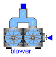
This component models a blower of a wastewater treatment plant which generates an airflow that is needed for the nitrification. The blower is connected to the nitrification tank. The airflow is controlled by a signal u (-1 <= u <= 1).
| Name | Default | Description |
|---|---|---|
| Q_max | 20000 | maximum blower capacity [m3 Air/d], this is produced when the control signal u is 1 or greater |
| Q_min | 0.0 | minimum blower capacity [m3 Air/d], this is produced when the control signal u is -1 or below |
model blower "Blower for the aeration of the nitrification tanks"
extends WasteWater.Icons.blower;
package WWU = WasteWater.WasteWaterUnits;
parameter WWU.VolumeFlowRate Q_max=20000 "maximum blower capacity";
parameter WWU.VolumeFlowRate Q_min=0.0 "minimum blower capacity";
Real H;
// this is just a help variable to reduce expressions
Interfaces.AirFlow AirOut;
Modelica.Blocks.Interfaces.InPort u(final n=1);
equation
H = 0.5*(-Q_min + Q_max) + u.signal[1]*0.5*(-Q_min + Q_max) + Q_min;
AirOut.Q_air = -(if H > Q_max then Q_max else if H < Q_min then Q_min else H)
;
end blower;
WasteWater.ASM1.pump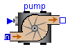
This component models an ASM1 wastewater pump. It generates a wastewater flow that is controlled by the signal u (-1 <= u <=1).
| Name | Default | Description |
|---|---|---|
| Q_min | 0.0 | maximum pump capacity [m3/d], this is produced when the control signal u is 1 or greater |
| Q_max | 20000 | minimum pump capacity [m3/d], this is produced when the control signal u is -1 or below |
model pump "ASM1 wastewater pump" extends WasteWater.Icons.pump; package WWU = WasteWater.WasteWaterUnits; parameter WWU.VolumeFlowRate Q_min=0.0 "minimum pump capacity"; parameter WWU.VolumeFlowRate Q_max=20000 "maximum pump capacity"; Real H; // this is just a help variable to reduce expressions Interfaces.WWFlowAsm1in In; Interfaces.WWFlowAsm1out Out; Modelica.Blocks.Interfaces.InPort u(final n=1); equation H = 0.5*(-Q_min + Q_max) + u.signal[1]*0.5*(-Q_min + Q_max) + Q_min; Out.Q = -(if H > Q_max then Q_max else if H < Q_min then Q_min else H); Out.Q + In.Q = 0; Out.Si = In.Si; Out.Ss = In.Ss; Out.Xi = In.Xi; Out.Xs = In.Xs; Out.Xbh = In.Xbh; Out.Xba = In.Xba; Out.Xp = In.Xp; Out.So = In.So; Out.Sno = In.Sno; Out.Snh = In.Snh; Out.Snd = In.Snd; Out.Xnd = In.Xnd; Out.Salk = In.Salk; end pump;

This component is used to feed an ASM1 wwtp model with flow data from measurement when e.g. concentration is measured after the primary clarifier. The dimension of InPort is 1. 1 volumeflowrate Q of incoming wastewater [m3/d]
model FlowSource "Flow source" extends WasteWater.Icons.FlowSource; Interfaces.WWFlowAsm1out Out; Modelica.Blocks.Interfaces.InPort data(final n=1); equation Out.Q = -data.signal[1]; end FlowSource;

This component provides all ASM1 data at the influent of a wastewater treatment plant. The dimension of InPort is 14. 1 volumeflowrate Q of incoming wastewater [m3/d] 2 Si [g COD/m3] 3 Ss [g COD/m3] 4 Xi [g COD/m3] 5 Xs [g COD/m3] 6 Xbh [g COD/m3] 7 Xba [g COD/m3] 8 Xp [g COD/m3] 9 So [g O2/m3] 10 Sno [g N/m3] 11 Snh [g N/m3] 12 Snd [g N/m3] 13 Xnd [g N/m3] 14 Salk[mmol/l]
model WWSource "Wastewater source" extends WasteWater.Icons.WWSource; Interfaces.WWFlowAsm1out Out; Modelica.Blocks.Interfaces.InPort data(final n=14); equation Out.Q = -data.signal[1]; Out.Si = data.signal[2]; Out.Ss = data.signal[3]; Out.Xi = data.signal[4]; Out.Xs = data.signal[5]; Out.Xbh = data.signal[6]; Out.Xba = data.signal[7]; Out.Xp = data.signal[8]; Out.So = data.signal[9]; Out.Sno = data.signal[10]; Out.Snh = data.signal[11]; Out.Snd = data.signal[12]; Out.Xnd = data.signal[13]; Out.Salk = data.signal[14]; end WWSource;
WasteWater.ASM1.EffluentSink

This component terminates an ASM1 wastewater treatment plant model e.g. the wastewater flow to the receiving water.
model EffluentSink "Receiving water (river)" // only for graphical termination in diagram layer, no equation needed extends WasteWater.Icons.EffluentSink; Interfaces.WWFlowAsm1in In; equation end EffluentSink;
WasteWater.ASM1.SludgeSink

This component terminates the waste sludge stream of an ASM1 wastewater
treatment plant model.
Storage or further sludge treatment is not jet considered.
model SludgeSink "Wastesludge sink" // only for graphical termination in diagram layer, no equation needed extends WasteWater.Icons.SludgeSink; Interfaces.WWFlowAsm1in In; equation end SludgeSink;
WasteWater.ASM1.ControlledDivider2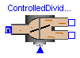
This component divides one wastewater flow (ASM1) into two flows which are controlled by
the signal u (0...1). Is u.signal=1, the flow goes to output 1 (Out1) and is u.signal=0, the flow goes
to output 2 (Out2). The concentrations of the outport-flows are equal to the concentration at inport.
model ControlledDivider2 "Controlled flow divider" // divides one flow of wastewater into 2 Flows controlled by the // input signal u; u=1 means Out1.Q=In.Q and u=0 means Out2.Q=In.Q extends WasteWater.Icons.ControlledDivider2; Interfaces.WWFlowAsm1in In; Interfaces.WWFlowAsm1out Out1; Interfaces.WWFlowAsm1out Out2; Modelica.Blocks.Interfaces.InPort u(final n=1); equation Out1.Q = -In.Q*u.signal[1]; Out2.Q = -In.Q*(1 - u.signal[1]); Out1.Si = In.Si; Out1.Ss = In.Ss; Out1.Xi = In.Xi; Out1.Xs = In.Xs; Out1.Xbh = In.Xbh; Out1.Xba = In.Xba; Out1.Xp = In.Xp; Out1.So = In.So; Out1.Sno = In.Sno; Out1.Snh = In.Snh; Out1.Snd = In.Snd; Out1.Xnd = In.Xnd; Out1.Salk = In.Salk; Out2.Si = In.Si; Out2.Ss = In.Ss; Out2.Xi = In.Xi; Out2.Xs = In.Xs; Out2.Xbh = In.Xbh; Out2.Xba = In.Xba; Out2.Xp = In.Xp; Out2.So = In.So; Out2.Sno = In.Sno; Out2.Snh = In.Snh; Out2.Snd = In.Snd; Out2.Xnd = In.Xnd; Out2.Salk = In.Salk; end ControlledDivider2;
WasteWater.ASM1.divider2

This component divides one ASM1 wastewater flow into two ASM1 wastewater flows.
model divider2 "Flowdivider"
// divides one flow of wastewater into 2 Flows; one amount needs to be specified
extends WasteWater.Icons.divider2;
Interfaces.WWFlowAsm1in In;
Interfaces.WWFlowAsm1out Out1;
Interfaces.WWFlowAsm1out Out2;
equation
In.Q + Out1.Q + Out2.Q = 0;
Out1.Si = In.Si;
Out1.Ss = In.Ss;
Out1.Xi = In.Xi;
Out1.Xs = In.Xs;
Out1.Xbh = In.Xbh;
Out1.Xba = In.Xba;
Out1.Xp = In.Xp;
Out1.So = In.So;
Out1.Sno = In.Sno;
Out1.Snh = In.Snh;
Out1.Snd = In.Snd;
Out1.Xnd = In.Xnd;
Out1.Salk = In.Salk;
Out2.Si = In.Si;
Out2.Ss = In.Ss;
Out2.Xi = In.Xi;
Out2.Xs = In.Xs;
Out2.Xbh = In.Xbh;
Out2.Xba = In.Xba;
Out2.Xp = In.Xp;
Out2.So = In.So;
Out2.Sno = In.Sno;
Out2.Snh = In.Snh;
Out2.Snd = In.Snd;
Out2.Xnd = In.Xnd;
Out2.Salk = In.Salk;
end divider2;

This component mixes two flows of wastewater (ASM1) of different concentration and different amount.
model mixer2 "Mixer of two ASM1 characterised flows" extends WasteWater.Icons.mixer2; Interfaces.WWFlowAsm1in In1; Interfaces.WWFlowAsm1in In2; Interfaces.WWFlowAsm1out Out; equation In1.Q + In2.Q + Out.Q = 0; Out.Si = (In1.Si*In1.Q + In2.Si*In2.Q)/(In1.Q + In2.Q); Out.Ss = (In1.Ss*In1.Q + In2.Ss*In2.Q)/(In1.Q + In2.Q); Out.Xi = (In1.Xi*In1.Q + In2.Xi*In2.Q)/(In1.Q + In2.Q); Out.Xs = (In1.Xs*In1.Q + In2.Xs*In2.Q)/(In1.Q + In2.Q); Out.Xbh = (In1.Xbh*In1.Q + In2.Xbh*In2.Q)/(In1.Q + In2.Q); Out.Xba = (In1.Xba*In1.Q + In2.Xba*In2.Q)/(In1.Q + In2.Q); Out.Xp = (In1.Xp*In1.Q + In2.Xp*In2.Q)/(In1.Q + In2.Q); Out.So = (In1.So*In1.Q + In2.So*In2.Q)/(In1.Q + In2.Q); Out.Sno = (In1.Sno*In1.Q + In2.Sno*In2.Q)/(In1.Q + In2.Q); Out.Snh = (In1.Snh*In1.Q + In2.Snh*In2.Q)/(In1.Q + In2.Q); Out.Snd = (In1.Snd*In1.Q + In2.Snd*In2.Q)/(In1.Q + In2.Q); Out.Xnd = (In1.Xnd*In1.Q + In2.Xnd*In2.Q)/(In1.Q + In2.Q); Out.Salk = (In1.Salk*In1.Q + In2.Salk*In2.Q)/(In1.Q + In2.Q); end mixer2;

This component mixes 3 flows of wastewater (ASM1) of different concentration and different amount.
model mixer3 "Mixer of 3 ASM1 characterised flows"
extends WasteWater.Icons.mixer3;
Interfaces.WWFlowAsm1in In1;
Interfaces.WWFlowAsm1in In2;
Interfaces.WWFlowAsm1in In3;
Interfaces.WWFlowAsm1out Out;
equation
In1.Q + In2.Q + In3.Q + Out.Q = 0;
Out.Si = (In1.Si*In1.Q + In2.Si*In2.Q + In3.Si*In3.Q)/(In1.Q + In2.Q + In3.Q);
Out.Ss = (In1.Ss*In1.Q + In2.Ss*In2.Q + In3.Ss*In3.Q)/(In1.Q + In2.Q + In3.Q);
Out.Xi = (In1.Xi*In1.Q + In2.Xi*In2.Q + In3.Xi*In3.Q)/(In1.Q + In2.Q + In3.Q);
Out.Xs = (In1.Xs*In1.Q + In2.Xs*In2.Q + In3.Xs*In3.Q)/(In1.Q + In2.Q + In3.Q);
Out.Xbh = (In1.Xbh*In1.Q + In2.Xbh*In2.Q + In3.Xbh*In3.Q)/(In1.Q + In2.Q + In3.Q);
Out.Xba = (In1.Xba*In1.Q + In2.Xba*In2.Q + In3.Xba*In3.Q)/(In1.Q + In2.Q + In3.Q);
Out.Xp = (In1.Xp*In1.Q + In2.Xp*In2.Q + In3.Xp*In3.Q)/(In1.Q + In2.Q + In3.Q);
Out.So = (In1.So*In1.Q + In2.So*In2.Q + In3.So*In3.Q)/(In1.Q + In2.Q + In3.Q);
Out.Sno = (In1.Sno*In1.Q + In2.Sno*In2.Q + In3.Sno*In3.Q)/(In1.Q + In2.Q + In3.Q);
Out.Snh = (In1.Snh*In1.Q + In2.Snh*In2.Q + In3.Snh*In3.Q)/(In1.Q + In2.Q + In3.Q);
Out.Snd = (In1.Snd*In1.Q + In2.Snd*In2.Q + In3.Snd*In3.Q)/(In1.Q + In2.Q + In3.Q);
Out.Xnd = (In1.Xnd*In1.Q + In2.Xnd*In2.Q + In3.Xnd*In3.Q)/(In1.Q + In2.Q + In3.Q);
Out.Salk = (In1.Salk*In1.Q + In2.Salk*In2.Q + In3.Salk*In3.Q)/(In1.Q + In2.Q
+ In3.Q);
end mixer3;
WasteWater.ASM1.sensor_COD

This component measures the chemical oxygen demand (COD) concentration [g/m3] of ASM1 wastewater and provides the result as output signal (to be further processed with blocks of the Modelica.Blocks library).
model sensor_COD "Ideal sensor to measure chemical oxygen demand (COD)" extends WasteWater.Icons.sensor_COD; Interfaces.WWFlowAsm1in In; Modelica.Blocks.Interfaces.OutPort COD(final n=1); equation In.Q = 0.0; COD.signal[1] = In.Si + In.Ss + In.Xi + In.Xs + In.Xbh + In.Xba + In.Xp; end sensor_COD;
WasteWater.ASM1.sensor_NH

This component measures the ammonium nitrogen concentration [g/m3] of ASM1 wastewater and provides the result as output signal (to be further processed with blocks of the Modelica.Blocks library).
model sensor_NH "Ideal sensor to measure ammonium nitrogen" extends WasteWater.Icons.sensor_NH; Interfaces.WWFlowAsm1in In; Modelica.Blocks.Interfaces.OutPort Snh(final n=1); equation In.Q = 0; Snh.signal[1] = In.Snh; end sensor_NH;

This component measures the nitrate nitrogen concentration [g/m3] of ASM1 wastewater and provides the result as output signal (to be further processed with blocks of the Modelica.Blocks library).
model sensor_NO "Ideal sensor to measure nitrate nitrogen" extends WasteWater.Icons.sensor_NO; Interfaces.WWFlowAsm1in In; Modelica.Blocks.Interfaces.OutPort Sno(final n=1); equation In.Q = 0; Sno.signal[1] = In.Sno; end sensor_NO;

This component measures the dissolved oxygen concentration [g/m3] of ASM1 wastewater and provides the result as output signal (to be further processed with blocks of the Modelica.Blocks library).
model sensor_O2 "Ideal sensor to measure dissolved oxygen concentration" extends WasteWater.Icons.sensor_O2; Interfaces.WWFlowAsm1in In; Modelica.Blocks.Interfaces.OutPort So(final n=1); equation In.Q = 0; So.signal[1] = In.So; end sensor_O2;
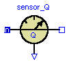
This component measures the flow of an ASM1 wastewater stream and provides the result as output signal (to be further processed with blocks of the Modelica.Blocks library).
model sensor_Q "Ideal sensor to measure the flow rate of an ASM1 wastewater stream" extends WasteWater.Icons.sensor_Q; Interfaces.WWFlowAsm1in In; Interfaces.WWFlowAsm1out Out; Modelica.Blocks.Interfaces.OutPort Q(final n=1); equation In.Q + Out.Q = 0; Q.signal[1] = In.Q; // eventually abs(In.Q) to be sure to have pos. signal In.Si = Out.Si; In.Ss = Out.Ss; In.Xi = Out.Xi; In.Xs = Out.Xs; In.Xbh = Out.Xbh; In.Xba = Out.Xba; In.Xp = Out.Xp; In.So = Out.So; In.Sno = Out.Sno; In.Snh = Out.Snh; In.Snd = Out.Snd; In.Xnd = Out.Xnd; In.Salk = Out.Salk; end sensor_Q;
WasteWater.ASM1.sensor_TKN

This component measures the Total Kjeldal Nitrogen (TKN) and the total nitrogen (N_total) concentration [g/m3] of ASM1 wastewater and provides the result as output signal (to be further processed with blocks of the Modelica.Blocks library). signal[1] - TKN signal[2] - N_total
| Name | Default | Description |
|---|---|---|
| Y_h | 0.67 | Heterotrophic Yield [g Xbh COD formed/(g COD utilised)] |
| Y_a | 0.24 | Autotrophic Yield [g Xba COD formed/(g N utilised)] |
| f_p | 0.08 | Fraction of biomass to particulate products [-] |
| i_xb | 0.086 | Fraction nitrogen in biomass [g N/(g COD)] |
| i_xp | 0.06 | Fraction nitrogen in particulate products [g N/(g COD)] |
model sensor_TKN "Ideal TKN and total nitrogen sensor"
extends WasteWater.Icons.sensor_TKN;
extends Interfaces.stoichiometry;
Interfaces.WWFlowAsm1in In;
Modelica.Blocks.Interfaces.OutPort TKN(final n=2);
equation
In.Q = 0.0;
TKN.signal[1] = In.Snh + In.Snd + In.Xnd + i_xb*(In.Xbh + In.Xba)
+ i_xp*(In.Xp + In.Xi);
TKN.signal[2] = TKN.signal[1] + In.Sno;
end sensor_TKN;
WasteWater.ASM1.sensor_TSS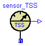
This component measures the total suspended solids concentration [g/m3] of ASM1 wastewater and provides the result as output signal (to be further processed with blocks of the Modelica.Blocks library).
model sensor_TSS "Ideal sensor to measure total suspended solids concentration (ASM1)" extends WasteWater.Icons.sensor_TSS; Interfaces.WWFlowAsm1in In; Modelica.Blocks.Interfaces.OutPort TSS(final n=1); equation In.Q = 0; TSS.signal[1] = 0.75*(In.Xs + In.Xbh + In.Xba + In.Xp + In.Xi); // the factor 0.75 needs to be adapted due to plant dependency // 0.75 is from the COST Benchmark configuration end sensor_TSS;